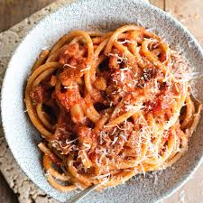

Pasta Recipe!

Amatriciana Pasta
This is a tomato based roman pasta using the main roman ingredients of pecorino remano cheese and guanciali
ingredients
- 1 Can of tomato
- 200g guanciali
- 50g Pecorino Romano Cheese
- 200g Fresh linguini
Steps
- Cook guanciali on medium heat until crispy and remove from pan
- Leave remaining fat from guanciali inside pan on medium heat and add can of tomatos and bring to a simmer for 15 minutes
- meanwhile bring a pot to boil and with 2 minutes remaining on the tomato add the pasta to the water
- once the pasta has finished cooking drain water keeping 1/4 a cup of pasta water
- add the pasta to the tomato sauce with some of the pasta water left over until the pasta is coated
- remove from heat and stir in grated cheese
- enjoy!
Back to main page.